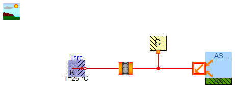

EEB.Components.BaseComponents.Ambient.Test.TestAmb_SkyGround
EEB.Components.BaseComponents.Ambient.Test.TestAmb_SkyGround
Extends from Modelica.Icons.Package (Icon for standard packages), EEB.Icons.TestModel.
| Name | Description |
|---|---|
| TestAmb_SkyGround |
EEB.Components.BaseComponents.Ambient.Test.TestAmb_SkyGround

Extends from EEB.Icons.TestModel.